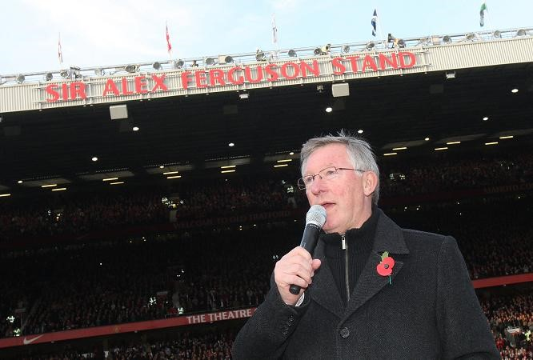

Chương 39

au hai mùa thắt chặt, hè 2011, nhà Glazer mở rộng hầu bao đôi chút, đủ để Sir Alex mua về thủ môn David De Gea (17 triệu), tiền vệ cánh Ashley Young (15), và hậu vệ đa năng Phil Jones (16.5). De Gea và Jones là những cầu thủ có tiềm năng lớn, song cần thêm thời gian để trưởng thành; còn Young tuy khá, vẫn chưa đạt đến đẳng cấp ngôi sao. Rời Old Trafford có Berbatov, Owen, và Park Ji Sung.
Đầu mùa, United gây ấn tượng mạnh, thắng liên tiếp năm trận, trong số nạn nhân của họ có cả Chelsea và Arsenal. Chelsea chịu thua 1-3, còn Arsenal thất trận với tỷ số kinh hoàng 2-8 (Rooney lập hattrick, Young ghi hai bàn). Không ngờ, “thăng thiên” nhanh thì “hạ thổ” cũng nhanh. Đến tháng 10, đội bị Manchester City đánh bại với tỷ số cũng kinh hoàng không kém: 6-1. Từ đó, Quỷ Đỏ lao đao chuệch choạc hẳn, bị rớt xuống hạng nhì. Đến kỳ chuyển nhượng mùa đông, Sir Alex phải gọi lại lão tướng Paul Scholes, người đã về hưu từ cuối mùa trước.
Đã nghỉ ngơi cả nửa năm, Scholes khá sung sức khi tái xuất. Được Scholes truyền cảm hứng, United chiếm lại ngôi đầu, có lúc bỏ khá xa City. Tuy nhiên, đến tháng tư, họ lại “trật đường ray”. Thắng 1-0 trong trận derby lượt về, City một lần nữa vượt mặt đối thủ. Trước vòng đấu cuối cùng, hai đại kình địch bằng điểm nhau, nhưng City hơn về hiệu số. Muốn vô địch, United cần thắng Sunderland, và trông chờ City mất điểm trước QPR. Quỷ Đỏ làm được vế đầu tiên, vế thứ hai cũng… suýt thành sự thật. Suýt chứ chưa thành, vì City kịp ghi bàn vào phút 94 để thắng QPR 3-2[1].
Người hâm mộ United vô cùng thất vọng. Không thất vọng sao được, khi đã cầm vàng trên tay lại đánh rơi mất! Vậy nhưng, nếu bình tâm nhìn lại, sẽ thấy kết quả trên chẳng phải thảm họa. Hãy nhìn vào City, rồi nhìn United, và so sánh giữa hai bên. Từ khi đổi chủ, City đã chi gần nửa tỷ bảng để mua về một lố những ngôi sao, còn nhà Glazer thì làm những gì? Tương quan lực lượng chênh lệch[2], United lên ngôi như mùa 2010-2011 mới là thần kỳ, còn City đăng quang chỉ là cái lẽ nó phải thế thôi. Cạnh tranh quyết liệt với kẻ giàu hơn mình hàng ức vạn, để rồi chỉ mất chức vô địch vào đúng phút- cuối- cùng -của- trận- cuối- cùng- của- vòng- cuối- cùng, như vậy đã là rất nỗ lực rồi.
Nói thế có phải chấp nhận từ nay sẽ đứng sau Manchester City? Hoàn toàn không, nhưng cũng như hồi 2004-2006, cần có một giai đoạn chuyển tiếp. Chỉ cần Sir Alex vẫn cầm cương trong giai đoạn chuyển tiếp ấy, hoàn toàn có cơ sở hy vọng United sẽ trở lại mạnh mẽ hơn xưa.
Tuy kém về tài chính, United có ba thứ mà City không có. Thứ nhất: Truyền thống, thứ hai: Sir Alex Ferguson, thứ ba: Hệ thống trường đạo tào trẻ đầy chất lượng. Trường đào tạo tốt giúp đội sản xuất ngôi sao, không cần bỏ ra hàng chục triệu để mua. Truyền thống và Sir Alex là hai nhân tố giúp Quỷ Đỏ thu hút nhân tài. Nên nhớ: Cầu thủ không chỉ cần tiền, họ còn cần danh hiệu, và cần một môi trường tốt để phát triển khả năng. Đến một CLB có truyền thống hào hùng như United, chẳng hơn tới đội bóng không có truyền thống như City hay sao? Về danh hiệu, Sir Alex là biểu tượng cho sự ổn định ở United, hễ còn Sir thì còn niềm tin giành danh hiệu. Vả lại, được một bậc trưởng lão như Sir dẫn dắt là cơ hội tuyệt vời để trau dồi, nâng cao trình độ. Tất cả những lợi thế đó đủ bù đắp cho việc nhận lương thấp hơn lương ở City.
Nhìn vào đội hình United hiện tại, ta có lý do để lạc quan. Đã sẵn có một lực lượng kế cận đầy tiềm năng, với David De Gea, Phil Jones, Rafael, Danny Welbeck, Tom Cleverley, Sir Alex lại bổ sung thêm ba tài năng trẻ: Shiniji Kagawa, Alexander Buttner, và Nick Powell. Không chỉ tài năng trẻ, Sir thu hút được cả Robin Van Persie từ Arsenal. Van Persie là ngôi sao của bóng đá thế giới, vẫn còn giá trị sử dụng trong ba bốn năm, giá chuyển nhượng cũng khá phải chăng (24 triệu bảng). Theo tiết lộ của HLV Arsene Wenger, tiền đạo Hà Lan đã từ chối lời mời hậu hĩnh hơn bên phía Manchester City để tới Old Trafford. Điều đó cho thấy, đối với một số cầu thủ lớn, truyền thống của United và uy tín Sir Alex vẫn có sức hấp dẫn hơn túi tiền không đáy xứ Ả Rập. Thêm Van Persie, Rooney không còn là vì sao đơn độc trên hàng công. Hỗ trợ cho họ còn có “siêu dự bị” Chicharito. Với lực lượng bây giờ, cộng thêm tài xoay sở của Sir Alex, nhiều khả năng, United sẽ giành lại ngôi vô địch trong một hai mùa tới. Trong tình huống lạc quan nhất, nếu các cầu thủ trẻ đồng loạt đạt đến độ chín, họ có thể đăng quang ngay mùa 2012-2013.
Dĩ nhiên, về lâu về dài, sẽ tốt hơn cho United nếu CLB thoát khỏi “vòng tay” nhà Glazer. Từ năm 2010, một nhóm CĐV giàu có, được biết đến với cái tên Hồng Y Hiệp Sỹ, đã họp nhau bàn chuyện mua đội bóng. Gần đây, lại nghe phong thanh nhóm Hồng Y Hiệp Sỹ sẽ liên kết với hoàng gia Qatar nhằm đánh đổ nhà Glazer. Hãy cùng chờ xem mọi chuyện diễn biến ra sao. Nếu gia đình Glazer nhất quyết không “nhả mồi”, đành chỉ trông chờ vào tài làm ăn của họ, hy vọng họ giải quyết xong sớm các món nợ, cho tình hình dễ thở hơn một chút.
Những lời bàn trên đều đặt trên giả định Sir Alex sẽ ở lại Old Trafford trong ít nhất một vài năm tới. Liệu giả định đó có thực tế chăng?
Có người cho là không, viện lý do Sir không còn động lực. Khi người ta đã giành được tất cả, đã phá mọi kỷ lục, thì ở lại làm chi, đặc biệt là giữa hoàn cảnh khó khăn này? Với gần 50 danh hiệu các loại, không nghi ngờ gì nữa, Sir Alex là HLV giàu thành tích nhất hành tinh. Với 26 năm tại Old Trafford, Sir là HLV thâm niên nhất trong lịch sử Manchester United, vượt trên ngài Matt Busby. Với Cúp C1 đầu tiên, ông bước vào ngôi đền thiêng, lưu danh những nhà cầm quân vĩ đại. Với Cúp C1 thứ hai, ông đập tan mọi nghi ngờ rằng chiếc cúp thứ nhất chỉ là may mắn. Có còn gì để Sir Alex phải chứng tỏ nữa đâu? Danh hiệu cá nhân của ông cũng chất… đầy nhà. Khán đài Bắc cầu trường Old Trafford nay mang tên khán đài Alex Ferguson. Trước cầu trường nay ngất ngưởng tượng đồng Sir cao ba mét. Bản thân Sir đã được phong tước hiệp sỹ. Thậm chí ở lưỡng viện quốc hội, các ông nghị còn đang bàn chuyện phong Sir tước quý tộc. Nếu chuyện ấy thành hiện thực, Alex Ferguson sẽ trở thành vị huân tước (lord) đầu tiên của bóng đá. Không còn là Sir Alex, mà là Lord Alex.
Nhưng khát vọng chiến thắng của Alex Ferguson không bao giờ vơi cạn. Đúng! Rất nhiều kỷ lục đã bị phá, song chưa phải tất cả. Chẳng phải Bob Paisley vẫn là HLV duy nhất ba lần giành Cúp C1 đó sao? Còn 26 năm ở Old Trafford tuy dài, đâu đã lâu bằng 44 năm Guy Roux dẫn dắt Auxerre? Vẫn còn đó những đỉnh cao cho Sir Alex chinh phục, chẳng lý nào ông sớm nói lời chia tay. Hơn thế nữa, nội một tình yêu bất diệt Sir giành cho bóng đá nói chung và Manchester United nói riêng, cũng đủ là động lực giúp ông tiếp tục. Sir chẳng phải tuýp người hay bỏ dở công việc, đang trong quá trình xây dựng mộ thế hệ mới, ông quyết không dứt áo giã từ.
Tuy Sir Alex từng nhiều lần nói đến việc nghỉ hưu, về vấn đề hưu trí này, ta đừng nên nghe những gì Sir nói, hãy chỉ nhìn những gì ông làm.
Năm 2000, Sir tuyên bố rất dứt khoát “Chắc chắn tôi sẽ ra đi, mà đã đi rồi thì không bao giờ tái xuất như các ca sỹ hay làm đâu”. Chỉ hai năm sau, ông quay ngược 180 độ.
Sau Cúp C1 năm 2008, như đã thuật nơi chương trước, Sir lại tuyên bố sẽ không làm HLV đến tuổi 70. Thế rồi ông tròn 70 vào ngày 31 tháng 12 năm 2011, và…chẳng có chuyện gì xảy ra.
Nhà báo Stuart Mathieson của tờ Manchester Evening News tỏ ra rất hiểu Sir Alex. Khi nghe Sir đùa: “Tôi già rồi, vài năm nữa không chừng phải ngồi xe lăn”, anh đáp ngay: “Dù ngồi xe lăn, bảo đảm ông vẫn là HLV của United.”
Vâng, nếu sức khỏe cho phép, không chừng Sir Alex sẽ huấn luyện Quỷ Đỏ đến tận năm…80 tuổi.
Tại sao không?

Khán đài Bắc sân Old Trafford từ nay mang tên Sir Alex Ferguson (ảnh: Thesun.co.uk)
[1] Tại Cúp C1, United không lặp lại được kỳ tích năm ngoái, bị loại từ vòng đấu bảng.
[2] Cũng phải kể thêm: Khá nhiều cầu thủ United dính phải chấn thương nặng.